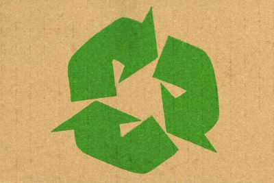

.png)
ReciclaFácil
Na ReciclaFácil, praticamos a reciclagem de forma inovadora e eficiente em todo o stado de São Paulo. Utilizamos tecnologias de ponta e parcerias estratégicas para garantir que os materiais recicláveis sejam coletados, processados e reintegrados ao ciclo de produção com o menor impacto ambiental possível. Nossa abordagem centrada no usuário torna a reciclagem fácil e acessível para todos os cidadãos de São Paulo, incentivando a participação ativa na preservação do nosso planeta. Junte-se a nós e faça parte dessa mudança positiva!

A reciclagem em São Paulo é uma questão crucial dada a imensa quantidade de resíduos produzidos
diariamente na maior cidade do Brasil. Com uma população em constante crescimento e uma atividade
econômica intensa, São Paulo enfrenta desafios significativos em relação à gestão de resíduos e à
poluição ambiental.
Atualmente, a cidade conta com iniciativas robustas de reciclagem, incluindo programas de coleta
seletiva que abrangem muitas áreas da metrópole. A Prefeitura de São Paulo mantém um sistema de
coleta diferenciada, separando resíduos recicláveis do lixo comum e encaminhando-os para tratamento
adequado. Além disso, os Pontos de Entrega Voluntária (PEVs) estão espalhados pela cidade,
oferecendo à população locais acessíveis para descartar materiais recicláveis, assim a ReciclaFácil
ira ajudar a população mostrando onde pode ser levado seus objetos para a reciclagem e como reciclar.
A conscientização da população sobre a importância da reciclagem e da redução do consumo é
fundamental para enfrentar esses desafios. Iniciativas de educação ambiental, campanhas de
conscientização e políticas públicas eficazes são necessárias para promover uma mudança de
comportamento e criar uma cidade mais sustentável e limpa, por isso a funcão da ReciclaFácil,
queremos informar e concientizar a população.
Em resumo, embora São Paulo tenha avançado em termos de reciclagem e gestão de resíduos, ainda há
muito a ser feito para combater a poluição e promover um ambiente mais saudável e sustentável para
todos os seus habitantes e queremos tornar São Paulo com menos poluição em um futuro proximo.